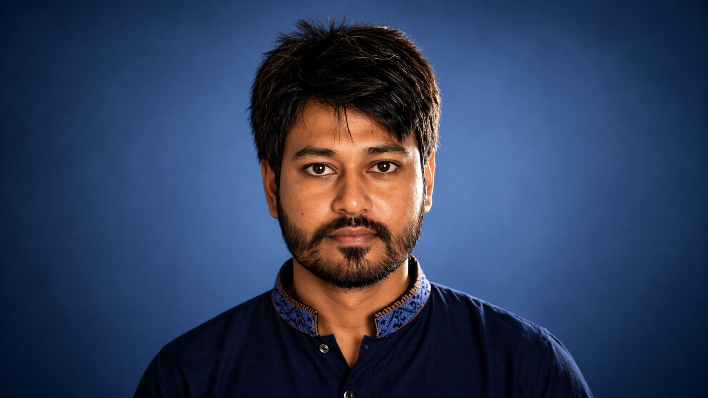

Medical Imaging
Automated disease detection, diagnosis, and analysis from medical images.
AI / ML RESEARCHER · COMPUTER VISION
Building transparent and clinically useful AI systems for early disease diagnosis through deep learning, computer vision, and medical image analysis.

model → explain → diagnose
I am an ICT graduate and researcher interested in using artificial intelligence to solve meaningful problems in healthcare.
My work centers on deep learning and computer vision for medical imaging, with a particular interest in automated disease detection, diagnosis, explainable AI, and clinically useful systems.
My research interests sit at the intersection of AI, medical imaging, and trustworthy machine learning.
Automated disease detection, diagnosis, and analysis from medical images.
Transparent AI systems that can support understanding and clinical decision-making.
Exploring vision transformers, self-supervised learning, multimodal models, and medical NLP.
Selected academic research projects in medical image analysis.
Comparative study of deep learning architectures for multi-class skin cancer classification using dermoscopic images. Built preprocessing, normalization, augmentation, training, and evaluation pipelines.
Developed a convolutional neural network pipeline for automated brain tumor detection from MRI data, including preprocessing, normalization, augmentation, training, and hyperparameter tuning.
Islamic University, Kushtia, Bangladesh
CGPA 3.48 / 4.00 · Rank 4/29Project: Comparative Study of Deep Learning Approaches for Skin Cancer Classification and DetectionIslamic University, Kushtia, Bangladesh
CGPA 3.25 / 4.00Final Year Project: Brain Tumor Detection Using Convolutional Neural Networks (CNN)A research-oriented technical toolkit spanning programming, deep learning, computer vision, and data science.
Python · C++ · C · R · MATLAB · SQL · Java
PyTorch · TensorFlow · Keras · Scikit-learn · Spark ML
OpenCV · Image preprocessing · Image augmentation · CNNs · Medical image analysis
Pandas · NumPy · Matplotlib · Statistical analysis · Data preprocessing
Git · Jupyter Notebook · Google Colab · VS Code · PyCharm · LaTeX
Deep Learning · Computer Vision · Medical Imaging · XAI · Multimodal Learning
Leadership & Activities
Program Coordinator · Career Club, Islamic UniversityExecutive Member · IT SocietyMember · SAICT Programming ClubMember · ICT Innovation LabLET'S CONNECT
I am interested in Ph.D. opportunities and research collaborations in AI, computer vision, medical imaging, and related fields.
shahmahdi.ict.iu@gmail.com ↗